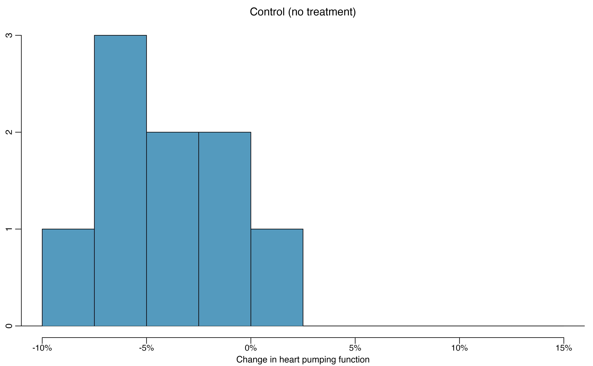
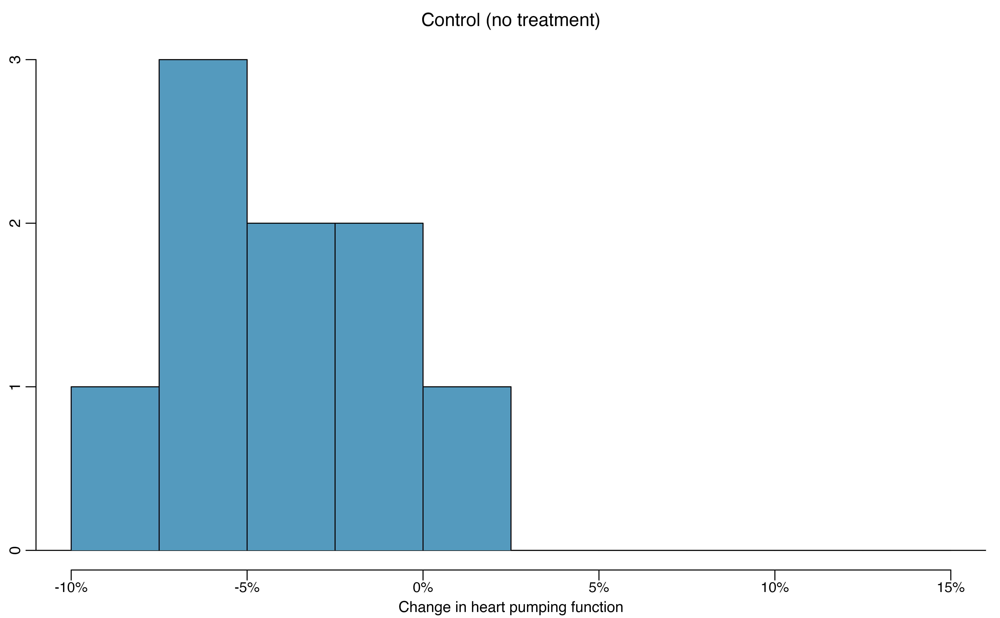

19 Inference for comparing two independent means
TODO
Below we summarize the notation used throughout this chapter.
Notation for a binary explanatory variable and quantitative response variable.
- \(n_1\), \(n_2\) = sample sizes of two independent samples
- \(\bar{x}_1\), \(\bar{x}_2\) = sample means of two independent samples
- \(s_1\), \(s_2\) = sample standard deviations of two independent samples
- \(\mu_1\), \(\mu_2\) = population means of two independent populations
- \(\sigma_1\), \(\sigma_2\) = population standard deviations of two independent populations
In this section we consider a difference in two population means, \(\mu_1 - \mu_2\), under the condition that the data are not paired. Just as with a single sample, we identify conditions to ensure we can use the \(t\)-distribution with a point estimate of the difference, \(\bar{x}_1 - \bar{x}_2\), and a new standard error formula.
The details for working through inferential problems in the two independent means setting are strikingly similar to those applied to the two independent proportions setting. We first cover a randomization test where the observations are shuffled under the assumption that the null hypothesis is true. Then we bootstrap the data (with no imposed null hypothesis) to create a confidence interval for the true difference in population means, \(\mu_1 - \mu_2\). The mathematical model, here the \(t\)-distribution, is able to describe both the randomization test and the boostrapping as long as the conditions are met.
The inferential tools are applied to three different data contexts: determining whether stem cells can improve heart function, exploring the relationship between pregnant women’s smoking habits and birth weights of newborns, and exploring whether there is statistically significant evidence that one variation of an exam is harder than another variation. This section is motivated by questions like “Is there convincing evidence that newborns from mothers who smoke have a different average birth weight than newborns from mothers who don’t smoke?”
19.1 Randomization test for \(H_0: \mu_1 - \mu_2 = 0\)
An instructor decided to run two slight variations of the same exam. Prior to passing out the exams, she shuffled the exams together to ensure each student received a random version. Summary statistics for how students performed on these two exams are shown in Table 19.1 and plotted in Figure 19.1. Anticipating complaints from students who took Version B, she would like to evaluate whether the difference observed in the groups is so large that it provides convincing evidence that Version B was more difficult (on average) than Version A.
19.1.1 Observed data
| \(n\) | \(\bar{x}\) | \(s\) | minimum | maximum | |
|---|---|---|---|---|---|
| A | 58 | 75.1 | 13.9 | 44 | 100 |
| B | 55 | 72.0 | 13.8 | 38 | 100 |

Figure 19.1: Exam scores for students given one of three different exams.
Construct hypotheses to evaluate whether the observed difference in sample means, \(\bar{x}_A - \bar{x}_B=3.1\), is due to chance. We will later evaluate these hypotheses by computing a p-value for the test.153
Before moving on to evaluate the hypotheses in the previous Guided Practice, let’s think carefully about the dataset. Are the observations across the two groups independent? Are there any concerns about outliers?154
19.1.2 Variability of the statistic
In Sections 9.2 and 15.1, the variability of the statistic (previously: \(\hat{p}_1 - \hat{p}_2\)) was visualized after shuffling the observations across the two treatment groups many times. The shuffling process implements the null hypothesis model (that there is no effect of the treatment). In the exam example, the null hypothesis is that exam A and exam B are equally difficult, so the average scores across the two tests should be the same. If the exams were equally difficult, due to natural variability, we would sometimes expect students to do slightly better on exam A (\(\bar{x}_A > \bar{x}_B\)) and sometimes expect students to do slightly better on exam B (\(\bar{x}_B > \bar{x}_A\)). The question at hand is: Does \(\bar{x}_A - \bar{x}_B=3.1\) indicate that exam A is easier than exam B?.
Figure 19.2 shows the process of randomizing the exam to the observed exam scores. If the null hypothesis is true, then the score on each exam should represent the true student ability on that material. It shouldn’t matter whether they were given exam A or exam B. By reallocating which student got which exam, we are able to understand how the difference in average exam scores changes due only to natural variability. There is only one iteration of the randomization process in Figure 19.2, leading to one simulated difference in average scores.

Figure 19.2: The version of the test (A or B) is randomly allocated to the test scores, under the null assumption that the tests are equally difficult.
Building on Figure 19.2, Figure 19.3 shows the values of the simulated statistics \(\bar{x}_{1, sim} - \bar{x}_{2, sim}\) over 1000 random simulations. We see that, just by chance, the difference in scores can range anywhere from -10 points to +10 points.

Figure 19.3: Histogram of differences in means, calculated from 1000 different randomizations of the exam types.
19.1.3 Observed statistic vs. null value
The goal of the randomization test is to assess the observed data, here the statistic of interest is \(\bar{x}_A - \bar{x}_B = 3.1\). The randomization distribution allows us to identify whether a difference of 3.1 points is more than one would expect by natural variability. By plotting the value of 3.1 on Figure 19.4, we can measure how different or similar 3.1 is to the randomized differences which were generated under the null hypothesis.

Figure 19.4: Histogram of differences in means, calculated from 1000 different randomizations of the exam types. The observed difference of 3.1 points is plotted as a vertical line, and the area more extreme than 3.1 is shaded to represent the p-value.
Example 19.1 Approximate the p-value depicted in Figure 19.4, and provide a conclusion in the context of the case study.
Using software, we find that 231 of the 1000 shuffled differences in means are as or further away from zero as our observed difference of 3.1. That is, 23.1% of the shuffled statistics lie in the shaded blue area in Figure 19.4. Thus, our p-value is 0.231.
With this large of a p-value, the data do not convincingly show that one exam version is more difficult than the other, and the teacher should not be convinced that she should add points to the Version B exam scores.
The large p-value and consistency of \(\bar{x}_A - \bar{x}_B=3.1\) with the randomized differences leads us to not reject the null hypothesis. Said differently, there is no evidence to think that one of the tests is easier than the other.
One might be inclined to conclude that the tests have the same level of difficulty, but that conclusion would be wrong. Indeed, our best point estimate of the true average difference in means between the two tests is 3.1! The hypothesis testing framework is set up only to reject a null claim, it is not set up to validate a null claim. As we concluded, the data are consistent with exams A and B being equally difficult, but the data are also consistent with exam A being 3.1 points “easier” than exam B. In fact, as we’ll see in the next section, since a 95% confidence interval for \(\mu_A - \mu_B\) is (-2.0, 8.3), these data are consistent with any difference between exam A being 2.0 points “harder” to exam A being 8.3 points “easier.” The data are not able to adjudicate on whether the exams are equally hard or whether one of them is slightly easier.
Conclusions where the null hypothesis is not rejected often seem unsatisfactory. However, in this case, the teacher and class are probably all relieved that there is no evidence to demonstrate that one of the exams is more difficult than the other.
19.2 Bootstrap confidence interval for \(\mu_1 - \mu_2\)
Before providing a full example working through a bootstrap analysis on actual data, consider a fictional situation where you would like to compare the average price of a car at one Awesome Auto franchise (Group 1) to the average price of a car at a different Awesome Auto franchise (Group 2). You are only able to randomly sample five cars from each Awesome Auto franchise, and you measure the selling price of each car in the sample. The process of bootstrapping can be applied to each Group separately, and the differences of means recalculated each time. Figure 19.5 visually describes the bootstrap process when interest is in a statistic computed on two separate samples. The analysis proceeds as in the one sample case, but now the (single) statistic of interest is the difference in sample means. That is, a bootstrap resample is done on each of the groups separately, but the results are combined to have a single bootstrapped difference in means. Repetition will produce 1000s of bootstrapped differences in means, and the histogram will describe the natural sampling variability associated with the difference in means.

Figure 19.5: For the two group comparison, 1000 bootstrap resamples are taken separately on each group, and the difference in sample means is calculated for each pair of bootstrap resamples. The set of 1000 differences is then analyzed as the distribution of the statistic of interest, with conclusions drawn on the parameter of interest.
19.2.1 Observed data
Does treatment using embryonic stem cells (ESCs) help improve heart function following a heart attack? Table 19.2 contains summary statistics for an experiment to test ESCs in sheep that had a heart attack. Each of these sheep was randomly assigned to the ESC or control group, and the percent change in their hearts’ pumping capacity was measured in the study. Figure 19.6 provides histograms of the two data sets. A positive value corresponds to increased pumping capacity, which generally suggests a stronger recovery. Our goal will be to identify a 90% confidence interval for the effect of ESCs on the change in heart pumping capacity relative to the control group.
| \(n\) | \(\bar{x}\) | \(s\) | |
|---|---|---|---|
| ESCs | 9 | 3.50 | 5.17 |
| control | 9 | -4.33 | 2.76 |
 
Figure 19.6: Histograms for both the embryonic stem cell and control group.
The point estimate of the true difference in the mean heart pumping variable is straightforward to find: it is the difference in the sample means. \[\begin{align*} \bar{x}_{esc} - \bar{x}_{control}\ =\ 3.50 - (-4.33)\ =\ 7.83 \end{align*}\](-4.33) = 7.83 \end{align*}
Identify the roles of the two variables in this study — which variable is the explanatory variable and which is the response? What is the scope of inference for this study?155
19.2.2 Variability of the statistic
As we saw in Section 15.2, we will use bootstrapping to estimate the variability associated with the difference in sample means when taking repeated samples. In a method akin to two proportions, a separate sample is taken with replacement from each group (here ESCs and control), the sample means are calculated, and their difference is taken. The entire process is repeated multiple times to produce a bootstrap distribution of the difference in sample means (without the null hypothesis assumption).
Figure 19.7 displays the variability of the differences in sample means with the percentile bootstrap 90% confidence interval super imposed.

Figure 19.7: Histogram of differences in means after 1000 bootstrap resamples are taken from each of the two groups. The observed difference in means from the original data is plotted as a black vertical line at 7.83. The blue lines provide the percentile bootstrap 90% confidence interval for the difference in true population means.
Example 19.2 Does the bootstrap confidence interval for the true difference in average change in pumping capacity, \(\mu_{esc} - \mu_{control}\), show that there is a difference across the two treatments?
Because the 90% interval displayed does not contain zero (note that zero is never one of the bootstrapped differences so 95% and 99% intervals would have given the same conclusion!), we conclude that the ESC treatment is significantly better with respect to heart pumping capacity than the treatment.
Because the study is a randomized controlled experiment, we can conclude that it is the treatment (ESC) which is causing the change in pumping capacity.
19.3 Theory-based inferential methods for \(\mu_1 - \mu_2\)
As in the one-mean and paired mean difference scenarios, a difference in sample means can be modeled by a \(t\)-distribution under certain conditions. These conditions are the same as in the one-mean and paired mean difference scenarios, but now the conditions need to be met for each sample. Similarly, we will compute a test statistic and a theory-based confidence interval using the standard error formula for a difference in sample means.
Using the \(t\)-distribution for a difference in means.
The \(t\)-distribution can be used for inference when working with the standardized difference of two means if
-
Independence (extended).
The data are independent within and between
the two groups, e.g., the data come from
independent random samples or from a
randomized experiment.
- Normality. We check the outliers for each group separately.
The standard error may be computed as \[ SE(\bar{x}_1 - \bar{x}_2) = \sqrt{\frac{s_1^2}{n_1} + \frac{s_2^2}{n_2}}, \]
The official formula for the degrees of freedom is quite complex and is generally computed using software, so instead you may use the smaller of \(n_1 - 1\) and \(n_2 - 1\) for the degrees of freedom if software isn’t readily available.
19.3.1 \(t\)-test for \(\mu_1 - \mu_2\)
Observed data
A dataset called ncbirths represents a random sample of 150 cases of mothers and their newborns in North Carolina over a year. Four cases from this data set are represented in Table 19.3. We are particularly interested in two variables: weight and smoke. The weight variable represents the weights of the newborns and the smoke variable describes which mothers smoked during pregnancy. We would like to know, is there convincing evidence that newborns from mothers who smoke have a different average birth weight than newborns from mothers who don’t smoke? We will use the North Carolina sample to try to answer this question. The smoking group includes 50 cases and the nonsmoking group contains 100 cases.
| fage | mage | weeks | visits | marital | gained | weight | gender | habit | whitemom |
|---|---|---|---|---|---|---|---|---|---|
| 13 | 39 | 10 | not married | 38 | 7.63 | male | nonsmoker | not white | |
| 14 | 42 | 15 | not married | 20 | 7.88 | male | nonsmoker | not white | |
| 19 | 15 | 37 | 11 | not married | 38 | 6.63 | female | nonsmoker | white |
| 21 | 15 | 41 | 6 | not married | 34 | 8.00 | male | nonsmoker | white |
Example 19.3 Set up appropriate hypotheses to evaluate whether there is a relationship between a mother smoking and average birth weight.
The null hypothesis represents the case of no difference between the groups.
-
\(H_0\): There is no difference in average birth weight for
newborns from mothers who did and did not smoke.
In statistical notation: \(H_0: \mu_{n} - \mu_{s} = 0\), where \(\mu_{n}\) represents the true mean birth weight for babies of non-smoking mothers and \(\mu_s\) represents the true mean birth weight for babies of mothers who smoked.
The alternative hypothesis represents the research question.
- \(H_A\): There is some difference in average newborn weights from mothers who did and did not smoke (\(\mu_{n} - \mu_{s} \neq 0\)).
Variability of the statistic
We check the two conditions necessary to model the difference in sample means using the \(t\)-distribution: the independence and normality conditions for each sample.
- Because the data come from a simple random sample,
the observations are independent,
both within and between samples.
- With both data sets over 30 observations, we inspect the data in Figure 19.8 for any particularly extreme outliers and find none.
Since both conditions are satisfied, the difference in sample means may be modeled using a \(t\)-distribution.

Figure 19.8: The top panel represents birth weights for infants whose mothers smoked. The bottom panel represents the birth weights for infants whose mothers who did not smoke.
The summary statistics in Table 19.4 may be useful for this Guided Practice.156
- What is the point estimate of the population difference, \(\mu_{n} - \mu_{s}\)?
- Compute the standard error of the point estimate from part a.
| smoker | nonsmoker | |
|---|---|---|
| mean | 6.78 | 7.18 |
| st. dev. | 1.43 | 1.60 |
| samp. size | 50 | 100 |
Observed statistic vs. null value
The test statistic for comparing two means is a T.
The T score is a ratio of how the groups differ as compared to how the observations within a group vary.
\[\begin{align*} T = \frac{\bar{x}_1 - \bar{x}_2 - 0}{\sqrt{\frac{s_1^2}{n_1} + \frac{s_2^2}{n_2}}} \end{align*}\]
When the null hypothesis is true and the conditions are met, T has a \(t\)-distribution with \(df = min(n_1 - 1, n_2 -1)\).
Conditions:
- independent observations within and across groups
- large samples and no extreme outliers
Example 19.4 Complete the hypothesis test started in the previous Example and Guided Practice on the ncbirths dataset and research question.
For reference, \(\bar{x}_{n} - \bar{x}_{s} = 0.40\),
\(SE(\bar{x}_{n} - \bar{x}_{s}) = 0.26\), and the sample sizes were \(n_n = 100\) and \(n_s = 50\).
We can find the test statistic for this test using the previous information: \[\begin{align*} T = \frac{\ 0.40 - 0\ }{0.26} = 1.54 \end{align*}\] The p-value is represented by the two shaded tails in Figure 19.9
We find the single tail area using software. (See R code below.) We’ll use the smaller of \(n_n - 1 = 99\) and \(n_s - 1 = 49\) as the degrees of freedom: \(df = 49\). The one tail area is 0.065; doubling this value gives the two-tail area and p-value, 0.135.
A p-value of 0.135 provides little to no evidence against the null hypothesis. There is insufficient evidence to say there is a difference in average birth weight of newborns from North Carolina mothers who did smoke during pregnancy and newborns from North Carolina mothers who did not smoke during pregnancy.
pt(1.54, df = 49, lower.tail = FALSE)
#> [1] 0.065
Figure 19.9: The mathematical model for the T statistic when the null hypothesis is true: a \(t\)-distribution with \(min(100-1, 50-1) = 49\) degrees of freedom. As expected, the curve is centered at zero (the null value). The T score is also plotted with the area more extreme than the observed T score plotted to indicate the p-value.
We’ve seen much research suggesting smoking is harmful during pregnancy, so how could we fail to reject the null hypothesis in the previous Example?157
If we made a Type 2 Error and there is a difference, what could we have done differently in data collection to be more likely to detect the difference?158
Public service announcement: while we have used this relatively small data set as an example, larger data sets show that women who smoke tend to have smaller newborns. In fact, some in the tobacco industry actually had the audacity to tout that as a benefit of smoking:
It’s true. The babies born from women who smoke are smaller, but they’re just as healthy as the babies born from women who do not smoke. And some women would prefer having smaller babies. - Joseph Cullman, Philip Morris’ Chairman of the Board on CBS’ Face the Nation, Jan 3, 1971
Fact check: the babies from women who smoke are not actually as healthy as the babies from women who do not smoke.159
19.3.2 \(t\) confidence interval for \(\mu_1 - \mu_2\)
Finding a \(t\)-confidence interval for a difference in population means, \(\mu_1 - \mu_2\).
Based on two independent samples of \(n_1\) and \(n_2\) observational units, respectively, with no clear outliers, a confidence interval for a difference in population means is \[\begin{align*} \text{point estimate} \ &\pm\ t^{\star}_{df} \times SE(\text{point estimate}) \\ &\to \\ \bar{x}_1 - \bar{x}_2 \ &\pm\ t^{\star}_{df} \times \sqrt{\frac{s_1^2}{n_1} + \frac{s_2^2}{n_2}} \end{align*}\] where \(\bar{x}_1\) and \(\bar{x}_2\) are the two sample means, \(t^{\star}_{df}\) corresponds to the confidence level and degrees of freedom \(df\), and \(SE\) is the standard error as estimated by the sample.
Example 19.5 Consider again the data from Section 19.2 on the use of embryonic stem cells (ESCs) to improve heart function. Can the \(t\)-distribution be used to make inference on the true difference in average change in heart pumping function using the point estimate, \(\bar{x}_{esc} - \bar{x}_{control} = 7.83\)?
First, we check for independence. Because the sheep were randomized into the groups, independence within and between groups is satisfied.
Figure 19.6 does not reveal any clear outliers in either group. (The ESC group does have a bit more variability, but this is not the same as having clear outliers.)
With both conditions met, we can use the \(t\)-distribution to model the difference of sample means.
Generally, we use statistical software to find the appropriate degrees of freedom using the raw data, or if software isn’t available, we can use the smaller of \(n_1 - 1\) and \(n_2 - 1\) for the degrees of freedom. In the case of the ESC example, this means we’ll use \(df = 8\).
Example 19.6 Calculate a 95% confidence interval for the true difference in mean change in heart pumping capacity of sheep after they’ve suffered a heart attack between the ESC treatment and the control treatment.
First, compute the point estimate and its standard error: \[\begin{align*} \bar{x}_{esc} - \bar{x}_{control} &= 3.50 - (-4.33) = 7.83\\ SE(\bar{x}_{esc} - \bar{x}_{control}) &= \sqrt{\frac{5.17^2}{9} + \frac{2.76^2}{9}} = 1.95 \end{align*}\] Using \(df = 8\), we can identify the critical value of \(t^{\star}_{8} = 2.31\) for a 95% confidence interval. (See R code below.) Finally, we can enter the values into the confidence interval formula: \[\begin{align*} 7.83 \ \pm\ 2.31\times 1.95 \quad\rightarrow\quad (3.32, 12.34) \end{align*}\] We are 95% confident that embryonic stem cells improve the mean change in heart’s pumping function in sheep that have suffered a heart attack by 3.32% to 12.34%.
qt(0.975, df = 8)
#> [1] 2.3119.4 Chapter review
Summary of t-procedures
In the past three chapters, we have seen the \(t\)-distribution applied as the appropriate mathematical model in three distinct settings. Although the three data structures are different, their similarities and differences are worth pointing out. We provide Table 19.5 partly as a mechanism for understanding \(t\)-procedures and partly to highlight the extremely common usage of the \(t\)-distribution in practice. You will often hear the following three \(t\)-procedures referred to as a one sample \(t\)-test (\(t\)-interval), paired \(t\)-test (\(t\)-interval), and two sample \(t\)-test (\(t\)-interval).
| one sample | paired sample | two indep. samples | |
|---|---|---|---|
| response variable | numeric | numeric | numeric |
| explanatory variable | none | binary | binary |
| parameter of interest | mean: \(\mu\) | paired mean diff: \(\mu_d\) | diff in means: \(\mu_1 - \mu_2\) |
| statistic of interest | mean: \(\bar{x}\) | paired mean diff: \(\bar{x}_d\) | diff in means: \(\bar{x}_1 - \bar{x}_2\) |
| standard error | \(\frac{s}{\sqrt{n}}\) | \(\frac{s_d}{\sqrt{n}}\) | \(\sqrt{\frac{s_1^2}{n_1} + \frac{s_2^2}{n_2}}\) |
| degrees of freedom | \(n-1\) | \(n -1\) | \(\min(n_1 -1, n_2 - 1)\) |
| conditions |
|
|
|
| Theory-based R functions | t.test | t.test | t.test |
| Simulation-based R catstats functions | paired_test, paired_bootstrap_CI | paired_test, paired_bootstrap_CI | two_mean_test, two_mean_bootstrap_CI |
Hypothesis tests. When applying the \(t\)-distribution for a hypothesis test involving means, we proceed as follows:
- Write appropriate hypotheses.
- Verify conditions for using the \(t\)-distribution.
- Independence. Observational units must be independent. This is typically true if the data came from a random sample (or two random samples, or one random sample randomly assigned to two treatments).
- Normality. If the sample size is less than 30 and there are no clear outliers in the data, or if the sample size is at least 30 and there are no particularly extreme outliers, then we can apply the \(t\)-distribution for a hypothesis tests of means. For a difference of means when the data are not paired, this condition must be met for each of the two samples.
- Compute the statistic of interest, the standard error, and the degrees of freedom. For \(df\), use \(n-1\) for one sample, and for two samples use either statistical software or the smaller of \(n_1 - 1\) and \(n_2 - 1\).
- Compute the T-score using the general formula: \[ T = \frac{\mbox{statistic} - \mbox{null value}}{\mbox{standard error of the statistic}} = \frac{\mbox{statistic} - \mbox{null value}}{SE(\mbox{statistic})} \]
- Use the statistical software to find the p-value using the appropriate \(t\)-distribution:
- Sign in \(H_A\) is \(<\): p-value = area below T-score
- Sign in \(H_A\) is \(>\): p-value = area above T-score
- Sign in \(H_A\) is \(\neq\): p-value = 2 \(\times\) area below \(-|\mbox{T-score}|\)
- Make a conclusion based on the p-value, and write a conclusion in context, in plain language, and in terms of the alternative hypothesis.
Confidence intervals. Similarly, the following is how we generally computed a confidence interval using a \(t\)-distribution:
- Verify conditions for using the \(t\)-distribution. (See above.)
- Compute the point estimate of interest, the standard error, the degrees of freedom, and \(t^{\star}_{df}\). The multiplier for a \((1-\alpha)\times100\)% confidence interval can be found in R by:
qt(1-(alpha/2), df). For example, \(t^{\star}_{10}\) with 95% confidence isqt(0.975, 10)= 2.228. - Calculate the confidence interval using the general formula: \[ \mbox{statistic} \pm\ t_{df}^{\star} SE(\mbox{statistic}). \]
- Put the conclusions in context and in plain language so even non-data scientists can understand the results.
Terms
We introduced the following terms in the chapter. If you’re not sure what some of these terms mean, we recommend you go back in the text and review their definitions. We are purposefully presenting them in alphabetical order, instead of in order of appearance, so they will be a little more challenging to locate. However you should be able to easily spot them as bolded text.
| one sample \(t\)-test | paired \(t\)-test | two sample \(t\)-test |